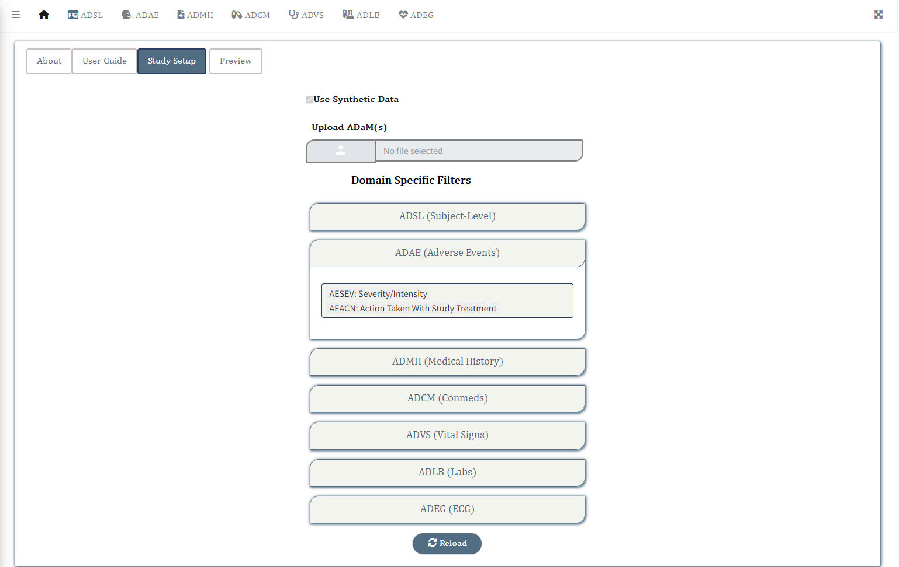

Steps

Upload/Read in Data
- Switch to the Setup on the Homepage
- Turn on Load Synthetic Data if you want to run the application using synthetic data available within the package
- Click on the Upload Files button if you want to load data you want to run the application on. (Only sas7bdat or RDS formats are accepted)
Note
The ADaM standard datasets listed below are accepted in pharmtables v0.1.0
- adsl: Subject-Level
- adae: Adverse Events
- adcm: Concomitant Medications
- admh: Medical History
- advs: Vital Signs
- adlb: Laboratory Analysis
- adeg: ECG Examinations
Each of the domain specific reports can be accessed by the tabs placed in the navigation panel at the top of the application.
Preview Data
Once the datasets have been read, the Preview button is enabled.
Click on the Preview button to quickly glance through the data sets that have been added for analysis. A modal window will pop up displaying the names of data sets loaded in a tabular format. Click on the expand button to view a specific data set.
Filters Setup
-
ADSL Filters
- Expand the ADSL Filters pill beneath the Preview button to add/remove any adsl specific variables to be added as filters. By default SEX, RACE, ETHNIC, AGE, SITEID and USUBJID variables are selected.
- At least one of the adsl variables need to be selected as a filter for the application to work.
- ADSL Filters appears in the left sidebar once the application is run and can be applied to filter all domain specific reports.
-
Domain Specific (ADxx) Filters
- Expand the pills corresponding to each domain (ADAE, ADVS etc) to add/remove the domain specific variables to be added as filters. Here is an example for ADAE specific filters, where AESEV and AEACN have been added as filters for all ADAE related reports.

- ADAE Filters will appear over the Table Display Options within the Filter window for all ADAE related reports, once the application is run. (Click on the icon to open the filter window)